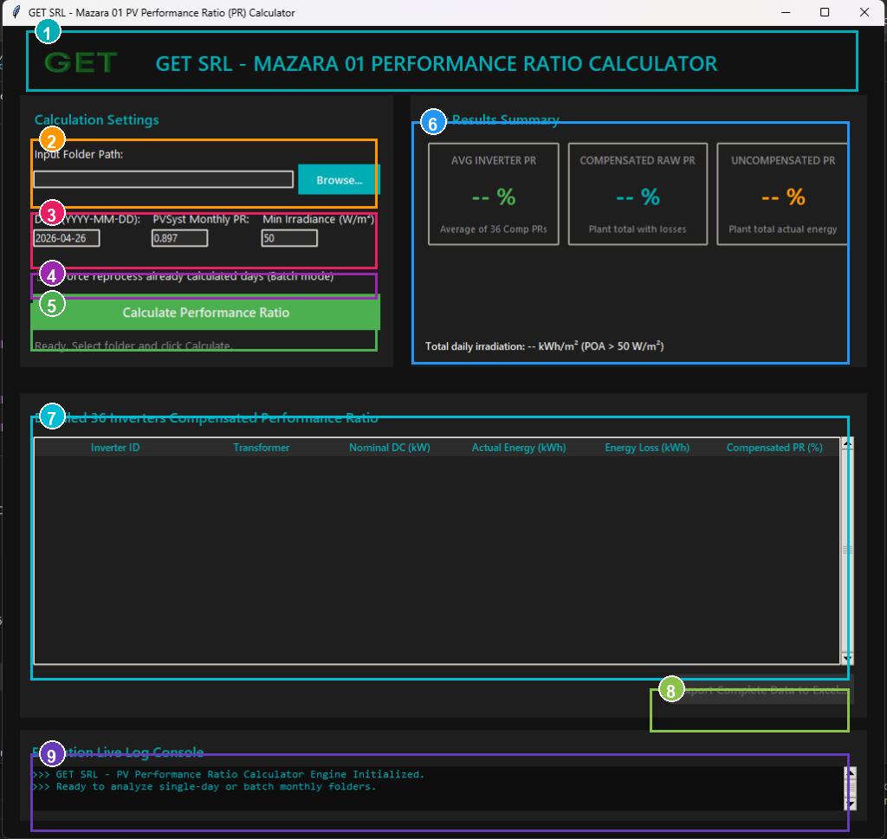

Guida Interattiva al Software
Clicca sulle schede sottostanti per esplorare le funzionalità corrispondenti ai numeri sull'interfaccia grafica.
1
Intestazione e Brand GET SRL
Mostra il logo ufficiale aziendale e il titolo del software di automazione per il calcolo delle prestazioni fotovoltaiche dell'impianto Mazara 01.
2
Selezione Cartella di Input (Pulsante Browse)
Apre l'esplora risorse per selezionare la cartella dei dati grezzi SCADA. Selezionando la cartella mensile (es.
2026 05), il software attiva automaticamente l'elaborazione ciclica batch per l'intero mese!3
Parametri di Calcolo (Data, PVSyst, Irraggiamento)
Permette di impostare la data di riferimento, l'obiettivo contrattuale PVSyst (es. 0.897) e la soglia minima di irraggiamento (W/m²) oltre la quale scatta la stima delle perdite.
4
Opzione Ricalcolo Forzato (Modalità Batch)
Se selezionata, il motore ricalcola da zero ogni singolo giorno sovrascrivendo i file esistenti. Se deselezionata, il software salta istantaneamente i giorni già elaborati.
5
Pulsante Principale [ Calculate Performance Ratio ]
Avvia il motore di calcolo in background: filtra e pulisce i dati numerici, calcola le perdite per indisponibilità, genera i file giornalieri e aggiorna in tempo reale il file Madre mensile tramite OLE/COM.
6
Cruscotto Risultati Sintetici
Mostra in evidenza i tre valori chiave: Media PR dei 36 Inverter (Verde), Performance Ratio Compensato Ufficiale (Ciano) e PR Non Compensato Grezzo (Arancione).
7
Tabella Dettagliata 36 Inverter
Tabella navigabile con barre di scorrimento che mostra potenza di targa, energia prodotta, stima perdite e Performance Ratio compensato per ciascuna delle 36 macchine.
8
Pulsante Esportazione Excel Multi-Foglio
Esporta un report Excel autonomo contenente il riepilogo direzionale, l'elenco dei 36 inverter e tutti i 96 quarti d'ora della giornata con i calcoli dettagliati.
9
Console Live Log in Tempo Reale
Visualizza i log operativi del motore Python/COM, notificando caricamenti di file, percorsi UNC e completamento dei calcoli.
📸 Snapshot Grafico con Callout Numerate

⚙️ Architettura e Parametri di Calcolo
| Parametro Input | Formato / Tipo | Significato Tecnico | Impatto sui Calcoli |
|---|---|---|---|
| Input Folder Path | Percorso Windows (Locale o UNC) | Cartella contenente i file di log SCADA esportati in formato Excel. | Il motore rileva automaticamente se si tratta di un giorno singolo o di un mese batch per avviare il calcolo sequenziale. |
| Date (YYYY-MM-DD) | Stringa ISO 8601 | Data di riferimento dell'analisi. | Serve per cercare i file meteo e di regolazione, e per determinare il posizionamento esatto della riga nel file Madre. |
| PVSyst Monthly PR | Decimale (es. 0.897) | Performance Ratio teorico atteso da simulazione di progetto PVSyst. | Utilizzato nella formula di stima delle perdite per indisponibilità e curtailment. |
| Min Irradiance | Intero (W/m²) | Soglia di irraggiamento solare sul piano del modulo (POA). | Sotto questa soglia (es. 50 W/m²), i calcoli di perdita di energia vengono azzerati per evitare sovrastime notturne o al crepuscolo. |
📊 Indicatori Chiave (KPI)
Spiegazione dettagliata dei tre macro-indicatori di performance restituiti dal cruscotto.
AVG INVERTER PR
88.5%
Media aritmetica pura dei 36 inverter compensati. Riflette l'efficienza di conversione DC/AC delle macchine al netto di guasti di rete esterni.
COMPENSATED RAW PR
87.2%
Performance Ratio di Impianto Contrattuale. Calcolato sommando l'energia immessa in rete alle perdite stimate per indisponibilità e curtailment.
UNCOMPENSATED PR
81.4%
Performance Ratio Grezzo. Calcolato unicamente sull'energia attiva contata dai misuratori SATAC, senza alcuna compensazione di perdite esterne.
📑 Dettaglio e Formule Macchine (TX1, TX2, TX3)
| ID Inverter | Trasformatore | Potenza Nominale DC (kW) | Logica Calcolo Perdite (Downtime + Curtailment) |
|---|---|---|---|
| TX1-INV-1 .. 7, 12 | TX1 | 343.75 kW | Se potenza ≤ 0 e POA > soglia → Stima su media di cabina o formula PVSyst. |
| TX1-INV-8 .. 11 | TX1 | 359.375 kW | Idem con targa di stringa maggiorata. |
| TX2-INV-1, 4, 5 | TX2 | 328.125 kW | Cabina centrale. Calcolo perdite con limite AC di stringa (320 kW). |
| TX3-INV-1 .. 11 | TX3 | 359.375 kW | Stringhe di cabina Est. Regolazione potenza attiva applicata per curtailment. |
🛠️ Troubleshooting & FAQ per Ingegneri Junior
Soluzioni immediate alle casistiche e anomalie più comuni riscontrate sui file SCADA.
1. Perché compare l'errore "#DIV/0!" in alcune celle dei file Excel giornalieri?
▼
Nelle prime ore della giornata (es. prima delle 06:00), l'irraggiamento solare registrato dai pirometri è pari a zero. Nei file originali non protetti, le divisioni matematiche per l'irraggiamento medio generavano l'errore
#DIV/0!. Il nostro software risolve questo problema inserendo automaticamente la funzione Excel =IFERROR(..., 0) su tutte le 96 righe di calcolo!
2. Cosa fare in caso di errore "TypeError: '>' not supported between instances of 'str' and 'int'"?
▼
In alcune giornate (come il 12 Maggio), il sistema SCADA esporta i numeri con la notazione italiana (es.
"0,0," o con virgola finale). Il software è dotato della funzione clean_float che intercetta questi campi testuali, sostituisce la virgola con il punto decimale e converte il dato in numero float a 64 bit in modo trasparente.
3. Come vengono gestiti i percorsi di rete UNC condivisi (es. \\S01\get\...) con Excel COM?
▼
Excel OLE richiede rigorosamente il backslash (
\). Se si incollano percorsi con slash normali (//S01/...), Windows restituisce l'errore RPC -2147023170. Il software esegue automaticamente la conversione .replace('/', '\') su tutti i percorsi, garantendo il collegamento stabile e veloce in memoria.